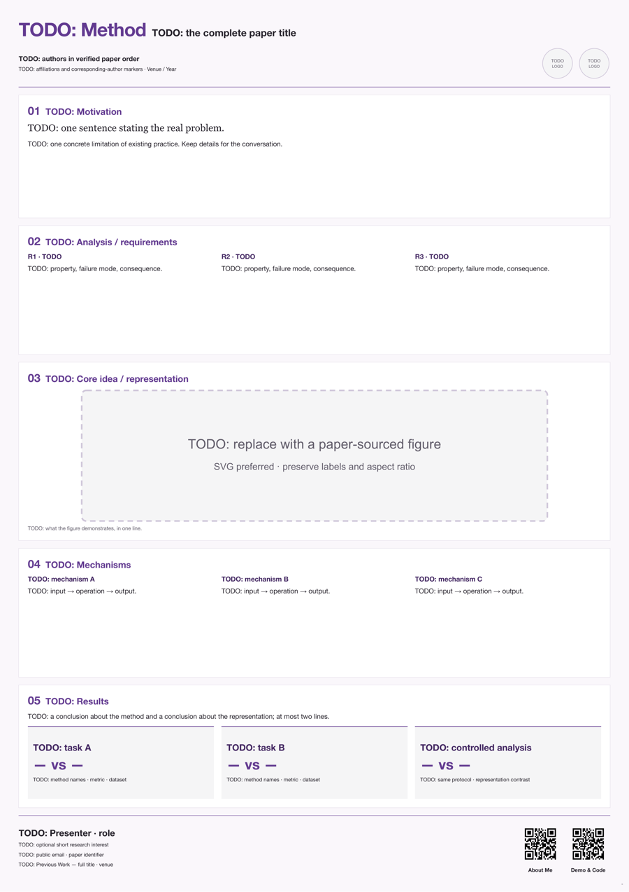
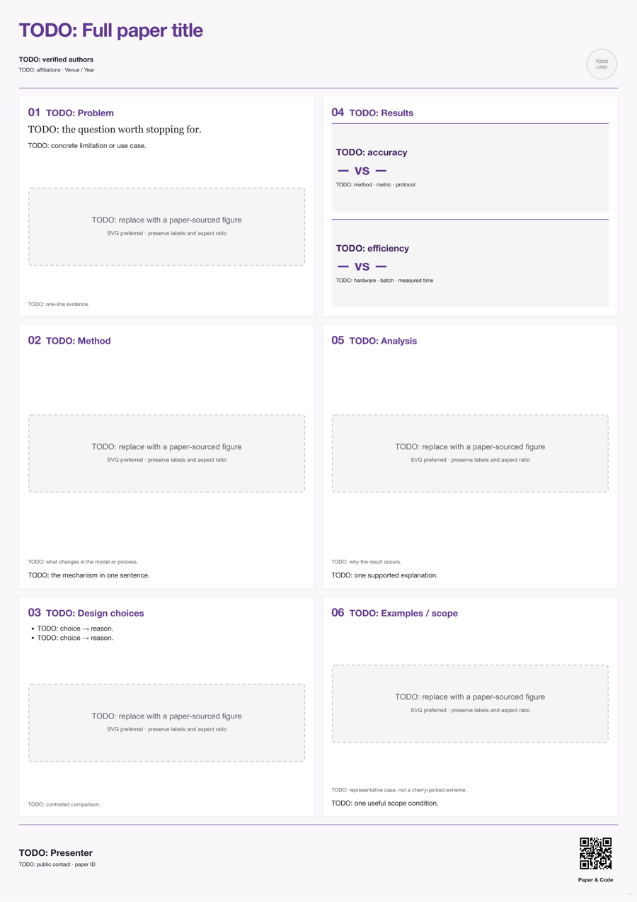
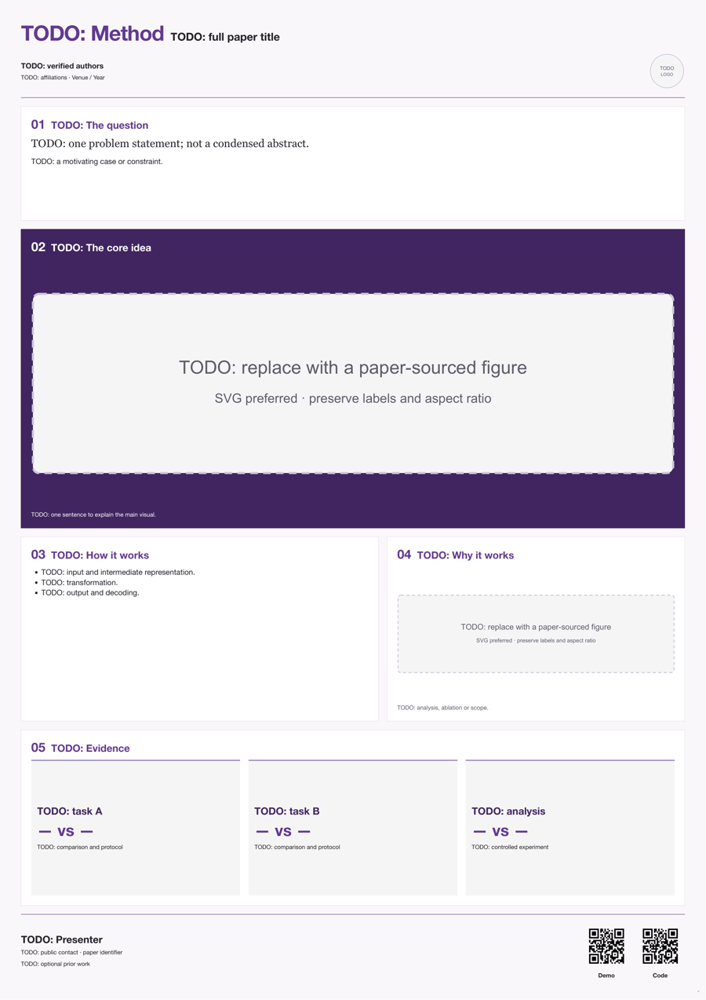

01 · Band story
问题 → 分析 → 核心表达 → 机制 → 结果。适合动机与表示分析较强的工作。

打开可编辑版式 ↗学术海报模板、创作经验和导出工具。
选择版式后，替换为你的论文内容。初始尺寸为 A0 竖版。问题 → 分析 → 核心表达 → 机制 → 结果。适合动机与表示分析较强的工作。

打开可编辑版式 ↗左侧建立问题和方法，右侧给出证据与分析。适合方法和结果都较丰富的工作。

打开可编辑版式 ↗一幅主图承担主要解释，下方机制与证据收尾。适合直观、可视化贡献明确的工作。

打开可编辑版式 ↗用 tools/poster.py init 创建项目，修改 poster.html，在浏览器预览。定稿后导出 PDF 和 PNG。
安装与用法 · 创作流程 · BeatEdit 迭代记录